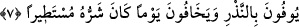

Bâzı âlimler şöyle derler: Onların dünyada iken hâlleri birbirinden farklı olduğu için
âhiretteki içecekleri kaynakları da farklı olmuştur. Herkes kendi hâline uygun kaynaktan
su içer. Bu pınar hayâ pınarı olduğu gibi sabır, vefa yahut bunun dışında başka bir pınar
da olabilir.
Öte yandan şarap; ya nefsâni-şeytânidir, ya cismânî-rahmânidir, veya ruhâni-
rabbânidir. Nefsâni-şeytâni şarap, dünyada iken fâsıkların içtikleri şaraptır. Bunu içmek
haramdır. Bir hadis-i şerifte Peygamber Efendimiz şöyle buyurur: “Herhangi bir kul
şarap kadehini eline aldığında Allah’a îman kula çağrıda bulunup: «Bu şarabı benim
üzerime sokma; çünkü ben onunla birlikte aynı kapta bulunamayız» der. O kul bu çağrıya
kulak tıkayıp şarabı içerse, îman kendisinden uzaklaşır ve kırk sabah ona geri dönmez.
Bundan sonra o kul yine tevbe ederse Allah onun tevbesini kabul eder. Ama eğer
aklından bir şey eksilirse, o eksilen şey bir daha geri gelmez.” [211]
Cismânî-rahmâni şaraba gelince bu âhiret yurdunda müminlerin içecek oldukları
şaraptır. Bu, “el-Vehhab” yâni çok çok veren, bağışlayan Allah’tan kuluna bağış ve
ihsandır. Ruhâni-rabbâni olan her iki dünyada muhabbet ve şevk ehlinin içtikleri
şaraptır. Bu, kadehlerin içinde en leziz olanıdır.
Mevlana Celâleddin Rumi (k.s.) şarabı şöyle dile getirir:
Ey sâkî! Susamışım, olmuşum hasret şaraba!
Getir kadehi, çok görme, âşıklar erdi şaraba
Al dünyayı, al malını senin olsun; yeter bize aşk
Aşkta bulduk bağı, bahçeyi, beldeyi;.dönmek yok bir daha.
7. O kullar, şiddeti her yere yayılmış olan bir günden korkarak verdikleri sözü
yerine getirirler.
Bu cümle isti’nâfiye/başlangıç cümlesidir. Burada sanki; “Onlar ne yapıyorlar ki bu
üstün ve yüce rütbeye ulaşıyorlar?” denmekte ve bu soruya; “Onlar kendi üzerlerine
yükledikleri adaklarını bile tam olarak yerine getiriyorlar. O hâlde Allah’ın kendilerine
farz kıldığı namaz, zekat, oruç, hac ve diğerler ibâdetleri nasıl yerine getirmezler ki!”
şeklinde cevap verilmektedir. Bu ifâde, onların üzerlerine gerekli şeyleri tam olarak
edâ ettiklerini abartılı bir biçimde yansıtmaktadır. Zira -âyetin deyimiyle- herhangi bir
şeyi “ifa etmek”, o şeyi tam ve eksiksiz yerine getirmek demektir.
“Adak” olarak tercüme ettiğimiz “nezir” kelimesi, insanın mubah olan bir fiili Allah’ı
tâzim etmek gâyesiyle kendi nefsine gerekli kılması demektir. Meselâ insan; “Allah
rızâsı için şu kadar sadaka vermek üzerime borç olsun” dese veya başka bir şeyi adasa
bu adak olur. Yine “hastam iyileşirse veya yitirdiğim şey bulunup elime verilirse şöyle